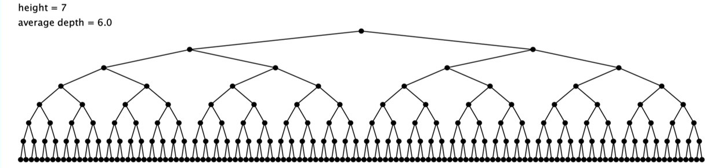

C1-ALGO-04 : Caractéristiques des algorithmes
Contents

C1-ALGO-04 : Caractéristiques des algorithmes#
Dans ce cours, nous utilisons des exemples introductifs des deux grandes classes d’algorithmes classiques : recherche et tri pour dériver les concepts de complexité, de convergence et de condition d’arrêt
Objectifs#
les élèves abordent les principales caractéristiques des algorithmes avec des exemples simples:
convergence
condition d’arrêt
complexité temporelle (et la notation “Big O”)
complexité spatiale
adéquation d’un algorithme avec le problème à résoudre
Exemple introductif (algorithme de recherche) : trouver un nombre entre 1 et 128#
liste triée
comment trouver un nombre ?
On joue ?#
Dichotomie#

Heuristique ?#
Une heuristique est un élément qui permet d’aider à la découverte. De manière générale, il s’agit de la partie de la science qui a pour objet les procédures de recherche et de découverte
Si on a une connaissance en amont, on peut l’utiliser pour accélérer la recherche. Par exemple :
Le nombre à trouver est le plus grand
le nombre à trouver se trouve entre 65 et 78
Remarques#
La liste doit être triée
Deux algorithmes différents amènent au même résultat mais avec des temps pour trouver la solution différents
Il s’agit-là d’une première approche de la complexité d’un algorithme
Ordres de grandeur#
Tri |
temps |
|---|---|
Méthode naïve |
linéaire : si on double la taille de la liste, alors on double le temps |
Dichotomie |
logarithmique : à chaque étape, on divise par deux le nombre d’élèments |
Recherche du plus grand nombre dans une liste non triée#
Que se passe-t-il si la liste n’est pas triée ?
doit-on la trier ? Comment la trier ?
autre méthode ?
Second exemple introductif : Algorithmes de tri#
Soit une liste non triée, comment la trier pour effectuer dans un second temps une recherche sur celle-ci ?
6609;9449;3597;1345;1349;5898;8298;3427;4014;2967;4167;2244;8035;
7232;4382;5799;2977;5882;2534;2052;78;7679;1258;8717;3227;5960;315;
1334;7320;2659;5503;7275;4699;9926;4621;120;8939;3876;4322;3671;611;
5947;6181;30;7634;5884;2208;7626;5954;5949;2543;5388;457;221;6649;3129;
8879;8022;3065;1072;8738;9586;9171;4423;3921;1774;2140;9150;5636;1207;
3082;7159;7897;9707;1758;524;7789;81121;1281;1373;1131;3883;8550;5890;
3569;3301;9334 ;934;9488;9014;9939;6133
Plus grand nombre dans la liste non-triée ?#
Il est obligatoire de parcourir l’ensemble des éléments de la liste et de les comparer. On utilise deux variables : l’élément à comparer et le plus grand au moment de la comparaison
Plus grand nombre dans la liste triée ?#
Il suffit de prendre le dernier, quelque soit la taille de la liste.
Trade-off : trier ou ne pas trier, telle est la question#
Est-il possible de trouver un compromis entre la recherche dans une liste non-triée ou le tri puis la recherche dans la liste triée en termes de temps de calcul et de quantité de mémoire nécessaires ?
Convergence algorithmique#
Un algorithme devrait toujours arriver à une solution. On dit alors qu’il converge lorsqu’une métrique spécifique ne varie plus.
Définitions : Complexité en temps et en espace d’un algorithme#
La complexité d’un algorithme représente la quantité de ressources nécessaires pour exécuter l’ensemble des instructions en fonction de l’entrée fournie (en fonction de la TAILLE du problème). Cette complexité se donne en temps ou en espace (quantité de mémoire nécessaire).
Par convention, on exprime la taille du problème avec la lettre n et on donne l’ordre de grandeur asymptotique de la fonction.
Complexité temporelle#
La complexité temporelle d’un algorithme est une fonction de la taille de l’entrée et qui exprime le temps d’exécution d’un algorithme. Exemple : si on a un élément à rechercher dans une liste de 1000, combien de temps cela prendra pour une liste de 2000.
Complexité spatiale#
La complexité spatiale d’un algorithme est une fonction de la taille de l’entrée et qui exprime la quantité de mémoire nécessaire à l’exécution d’un algorithme.
Meilleur et pire des cas : ordre de grandeur asymptotique#
Le comportement de la complexité (temporelle et spatiale) peut s’analyser dans le pire des cas.
L’asymptote est une courbe qui approche une autre sans jamais l’atteindre (du grec a exclusif et symptote rencontre).

L’ordre de grandeur asymptotique de la complexité d’un algorithme est donc le pire des cas et celui qui ne sera jamais atteint.
Classe de complexité des algorithmes#
L’ordre de grandeur asymptotique s’écrit avec la notation dites Grand O (Big O en anglais).
\(\mathcal{O}{()}\) |
classe |
|---|---|
\(\mathcal{O}(1)\) |
constante |
\(\mathcal{log(n)}(1)\) |
logarithmique |
\(\mathcal{O}(n)\) |
linéaire |
\(\mathcal{O}(n \cdot log(n))\) |
quasi-linéaire |
\(\mathcal{O}(n^2)\) |
quadratique |
\(\mathcal{O}(n^3)\) |
cubique |
\(\mathcal{O}(2^n)\) |
exponentielle |
\(\mathcal{O}(n!)\) |
factorielle |
Ressources supplémentaires#
from IPython.display import YouTubeVideo
YouTubeVideo('kPRA0W1kECg', width=960, height=540)